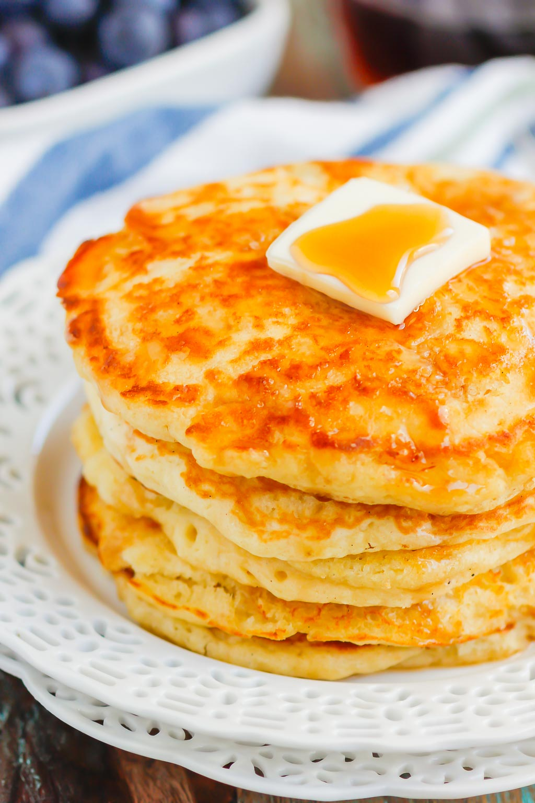

Buttermilk Pancakes

Ingredients
- 2 cups all-purpose flour
- 2 tsp baking powder
- 1 tsp baking soda
- 1/2 tsp salt
- 2 tbsp granulated sugar
- 2 cups buttermilk
- 2 large eggs
- 1 tsp vanilla extract
Directions
- Mix together the four, baking powder, baking soda, salt, sugar.
- In a separate bowl mix the eggs, butter milk, and vanilla extract.
- Combine the wet ingredients with the dry.
- Heat non-stick pan on medium heat.
- Drop batter onto non-stick pan.
- Once bubbles begin to form flip the pancake
- Serve with choice of topping, such as maple syrup or fruit.
- ENJOY!